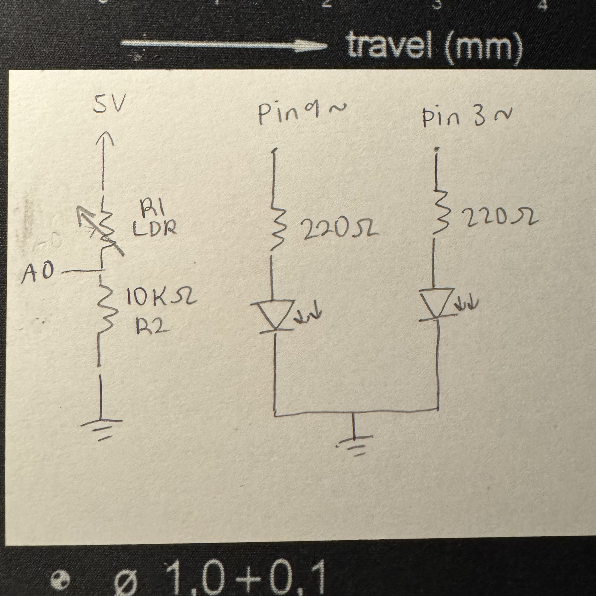
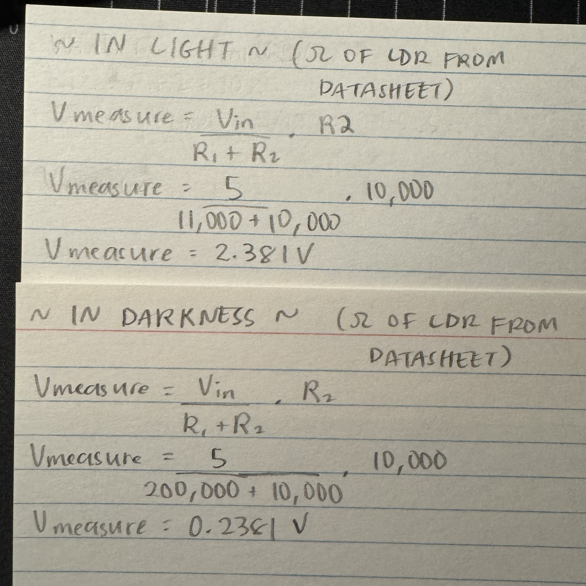
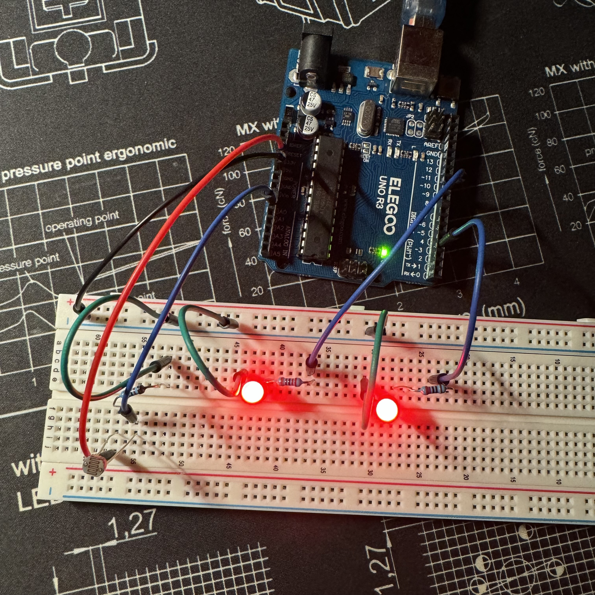
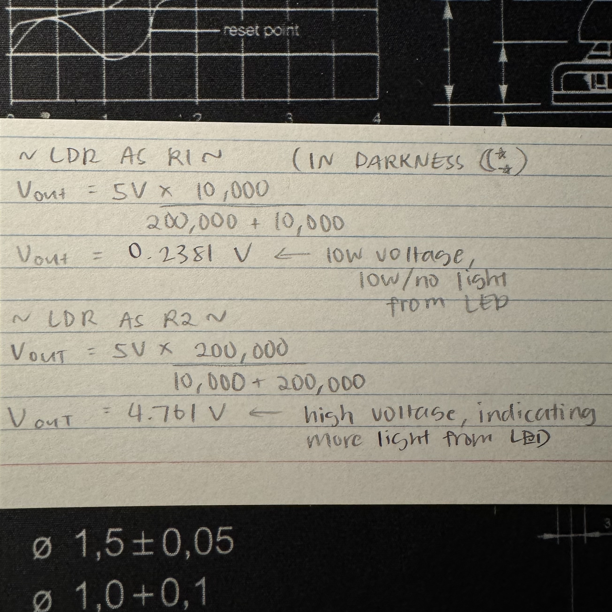
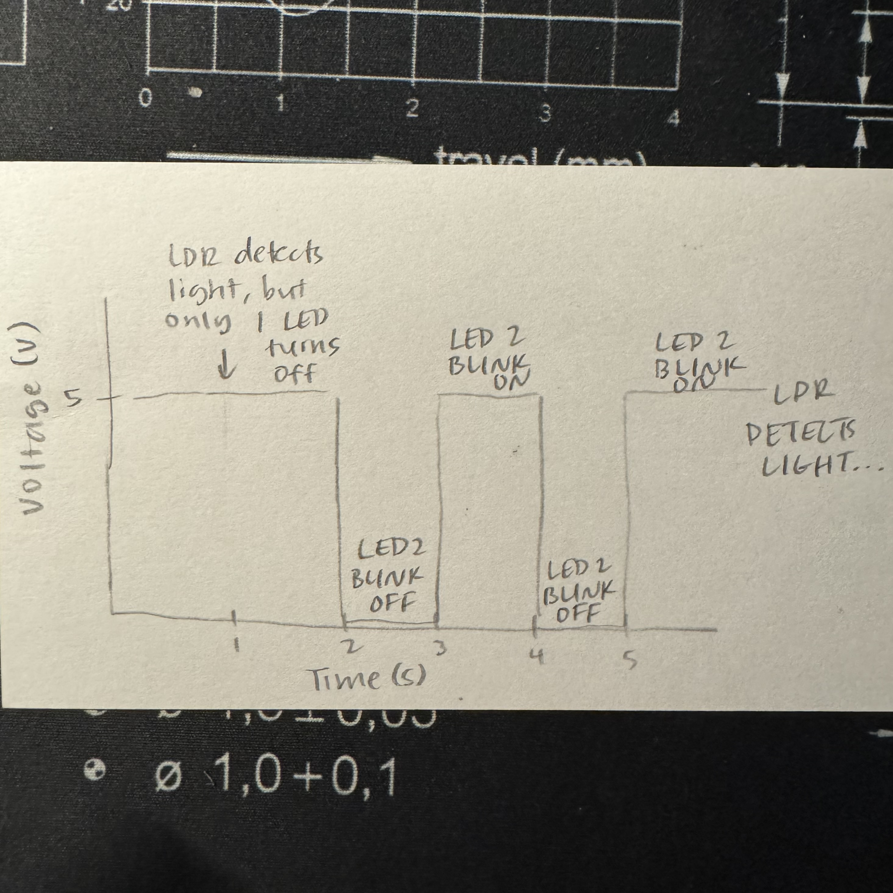

In this assignment, we were instructed to utilize a sensor
in a voltage divider to manipulate the state of an output device.
Shown in the GIF on the left, I chose to use a light-dependent
photoresistor and two LEDs. When the LDR detects light, the two LEDs
stay on. When there is no light, the first LED turns off, while
the second LED starts blinking.

The illustration on the left depicts the schematic diagram of this
assignment. I started out with a photoresistor (R1) that was powered
by 5V and attached to the A0 pin. Another resistor was connected in
series, with the value of 10kΩ, which was then connected to
ground. Two LEDs were added to the breadboard. The currents to both
LEDs were limited by 220Ω then connected to ground.

Here are the voltages measured at the voltage divider during the two
states of the LEDs I used. The two states that were used in this
assignment are on and off (which applies to both LEDs since my
second LED simply blinks). To calculate my V-measure, I gathered
the min and max resistance values when the LDR I used is in darkness
and is illuminated. Though the values calculated are more of an
estimate to what is shown in my circuit, it agrees that voltage
increases when detecting light, and decreases in darkness.

Here is a still photo of my circuit while LDR detects light. In this
state, both LEDs are lit and will only behave otherwise when the LDR
is in darkness. You can see that the LDR and the 10kΩ resistors
are arranged in series, while the LEDs and their resistors are
arranged in parallel. And though the two LEDs (pin 9~ and pin 3~)
are not arranged much differently on the breadboard, we'll see how
they behave differently from the firmware.
/* constant variables used to set pin numbers */
const int sensorPin = A0; /* pin attached to photoresistor */
const int ledPin = 9; /* pin attached to LED */
/* changeable variabled */
int sensorValue = 0;
int sensorMin = 1023;
int sensorMax = 0;
void setup() {
/* turns on LED to signal the start of the calibration period
all calibration code was provided by example Arduino code */
pinMode(13, OUTPUT);
digitalWrite(13, HIGH);
/* calibrate during the first five seconds */
while (millis() < 5000) {
sensorValue = analogRead(sensorPin);
/* record the maximum sensor value */
if (sensorValue > sensorMax) {
sensorMax = sensorValue;
}
/* record the minimum sensor value */
if (sensorValue < sensorMin) {
sensorMin = sensorValue;
}
}
/* signal the end of the calibration period */
digitalWrite(13, LOW);
}
void loop() {
/* read the value of the sensor */
sensorValue = analogRead(sensorPin);
/* constrain the sensor value using calibration min/max values */
sensorValue = constrain(sensorValue, sensorMin, sensorMax);
/* apply the calibration to the sensor reading */
sensorValue = map(sensorValue, sensorMin, sensorMax, 0, 255);
/* if-else statement reading if the sensor value is 0, aka the LED is connected to ground */
if (sensorValue == 0) {
/* code to blink LED attached to pin 3 */
digitalWrite(3, HIGH); /* turns the LED attached to pin 3 on */
delay(1000); /* delays code for 1 second */
digitalWrite(3, LOW); /* turn the LED attached to pin 3 off */
delay(1000); /* delays code for 1 second */
} else {
/* fade the LED using the calibrated value: */
analogWrite(ledPin, sensorValue);
/* with a sensorValue other than 0, the LED attached to pin 3 stays on continuously */
analogWrite(3, sensorValue);
}
}
Additional Questions
1. For my circuit, the variable resistor (LDR) would have to
be R1, otherwise the circuit would work in the opposite way. In
darkness, the resistance of the LDR must be high (since
there is reduced flow going through the LDR). A high
resistance would indicate that the voltage is lower, since
the LEDs aren't being connected to power. This is only something
that can be seen if the LDR is R1, which is shown in the
calculations below.

2. 
3. If we wanted to use a 10-bit PWM and 16-bit analog converter,
we would probably need to remove the constrain function that is
currently applying the min and max calibrated values to the
sensor reading. Then, we would map the 10-bit analog range (0 to
1023) to the 16-bit analog range in the map function so that
the 16-bit analog-to-digital converter would be effective.